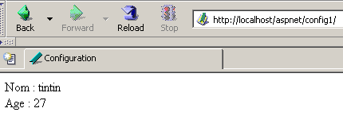
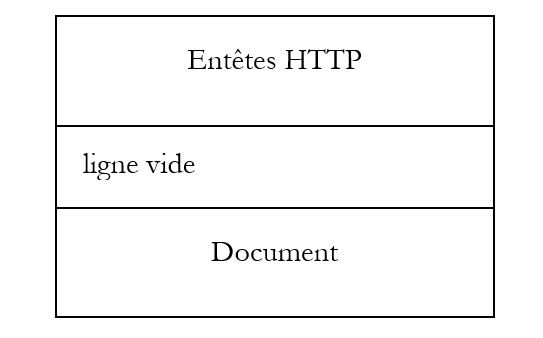
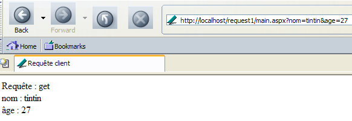
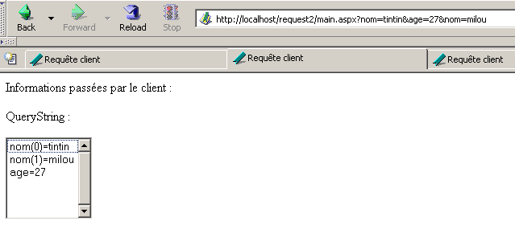

4. 开发基础 ASP.NET
4.1. Web 应用程序的概念 ASP.NET
4.1.1. 简介
Web 应用程序是由各种文档（HTML、.NET 代码、图像、声音等）组成的应用程序。这些文档必须位于同一个根目录下，该目录被称为 Web 应用程序的根目录。该根目录与 Web 服务器的虚拟路径相关联。 我们在 Cassini Web 服务器中曾接触过“虚拟文件夹”的概念。这一概念在 IIS Web 服务器中同样存在。 这两台服务器之间一个重要的区别在于：在某个时刻，IIS 可能拥有任意数量的虚拟目录，而 Cassini Web 服务器只有一个，即启动时指定的那个。 这意味着 IIS 服务器可以同时托管多个 Web 应用程序，而 Cassini 服务器每次只能托管一个。在之前的示例中，Cassini 服务器始终使用参数 (<webroot>,/aspnet) 启动，这些参数将虚拟文件夹 /aspnet 与物理文件夹 <webroot> 关联起来。 因此，Web 服务器始终只托管同一个 Web 应用程序。但这并不妨碍我们在该单一 Web 应用程序内编写和测试不同的、独立的页面。每个 Web 应用程序都有其专属的资源，这些资源位于其物理根目录 <webroot> 下：
- 一个名为 [bin] 的文件夹，用于存放预编译类
- 一个名为 [global.asax] 的文件，用于初始化整个 Web 应用程序及其每个用户的运行环境
- 一个名为 [web.config] 的文件，用于配置应用程序的运行参数
- 一个 [default.aspx] 文件，作为应用程序的入口
- ...
一旦应用程序使用了这三项资源中的任何一项，就需要专属的物理路径和虚拟路径。事实上，没有任何理由让两个不同的 Web 应用程序采用相同的配置。我们之前的示例之所以都能放置在同一个应用程序中（<webroot>,/aspnet），是因为它们未使用上述任何资源。
让我们回顾本章开头推荐的用于Web应用程序开发的MVC架构：

Web应用程序由类文件（控制器、业务类、数据访问类）和呈现文件（文档、图像、声音、样式表等）组成。 所有这些文件将放置在同一个根目录下，我们有时将其称为 <application-path>。该根目录将与一个虚拟路径 <application-vpath> 相关联。该虚拟路径与物理路径之间的关联是通过配置 Web 服务器来实现的。我们已经看到，对于 Cassini 服务器，这种关联是在服务器启动时进行的。例如，在 DOS 窗口中，我们可以使用以下命令启动 Cassini：
在 <application-path> 文件夹中，根据我们的需求，我们会找到：
- 用于存放预编译类（DLL）的 [bin] 文件夹
- 文件 [global.asax]，用于在应用程序初始化或用户会话初始化时进行配置
- 文件 [web.config]，用于配置应用程序
- 文件 [default.aspx]，用于在应用程序中设置默认页面
为了遵循这一Web应用程序的概念，接下来的示例都将放置在应用程序专用的<application-path>文件夹中，该文件夹将关联一个虚拟文件夹<application-vpath>，Cassini服务器将以将这两个参数关联起来的方式启动。
4.1.2. 配置 Web 应用程序
如果 <application-path> 是应用程序 ASP.NET 的根目录，则可以使用文件 <application-path>\web.config 来配置该应用程序。该文件采用 XML 格式。以下是一个示例：
<?xml version="1.0" encoding="UTF-8" ?>
<configuration>
<appSettings>
<add key="nom" value="tintin"/>
<add key="age" value="27"/>
</appSettings>
</configuration>
请注意，XML 标签区分大小写。所有配置信息都必须位于 <configuration> 和 </configuration> 标签之间。可用的配置部分有很多。 此处仅介绍其中一个，即 <appSettings> 部分，它允许使用 <add> 标签初始化数据。该标签的语法如下：
当 Web 服务器启动应用程序时，会检查 <application-path> 中是否存在名为 web.config 的文件。如果存在，则读取该文件并将信息存储在 [ConfigurationSettings] 类型的对象中，只要应用程序处于活动状态，该对象的信息即可供应用程序的所有页面使用。 类 [ConfigurationSettings] 具有一个静态方法 [AppSettings]：

要获取配置文件中键 C 的值，需编写 ConfigurationSettings.AppSettings("C")。结果将返回一个字符串。为了利用上述配置文件，我们创建一个名为 [default.aspx] 的页面。 文件 [default.aspx.vb] 中的代码 VB 将如下所示：
Imports System.Configuration
Public Class _default
Inherits System.Web.UI.Page
Protected nom As String
Protected age As String
Private Sub Page_Load(ByVal sender As System.Object, ByVal e As System.EventArgs) Handles MyBase.Load
'获取配置信息
nom = ConfigurationSettings.AppSettings("nom")
age = ConfigurationSettings.AppSettings("age")
End Sub
End Class
可以看出，在页面加载时，会获取配置参数 [nom] 和 [age] 的值。这些值将通过 [default.aspx] 的展示代码显示出来：
<%@ Page src="default.aspx.vb" Language="vb" AutoEventWireup="false" Inherits="_default" %>
<html>
<head>
<title>Configuration</title>
</head>
<body>
Nom :
<% =nom %><br/>
Age :
<% =age %><br/>
</body>
</html>
为了测试，我们将文件 [web.config]、[default.aspx] 和 [default.aspx.vb] 放在同一个文件夹中：
D:\data\devel\aspnet\poly\chap2\config1>dir
30/03/2004 15:06 418 default.aspx.vb
30/03/2004 14:57 236 default.aspx
30/03/2004 14:53 186 web.config
假设 <application-path> 是包含应用程序这三个文件的文件夹。Cassini 服务器使用参数 (<application-path>,/aspnet/config1) 启动。我们请求 URL 和 [http://localhost/aspnet/config1]。 由于 [config1] 是一个文件夹，Web 服务器将在此文件夹中查找名为 [default.aspx] 的文件，并显示该文件（如果找到的话）。在此情况下，它将找到该文件：

4.1.3. 应用程序、会话、上下文
4.1.3.1. 文件 global.asax
文件 [global.asax] 中的代码总是在当前请求所请求的页面加载之前执行。该文件必须位于应用程序的根目录 <application-path> 中。如果存在，Web 服务器会在以下不同时刻使用文件 [global.asax]：
- Web 应用程序启动或结束时
- 用户会话开始或结束时
- 用户请求开始时
与 .aspx 页面类似，[global.asax] 文件可通过多种方式编写，特别是将 VB 代码拆分为控制器类和呈现代码。这是 Visual Studio 工具的默认选择，我们在此也将采用相同做法。 通常无需进行任何呈现操作，因为这一职责由 .aspx 页面承担。因此，[global.asax] 文件的内容仅需包含一条引用控制器代码文件的指令：
<%@ Application src="Global.asax.vb" Inherits="Global" %>
请注意，该指令已不再是 [Page]，而是 [Application]。由 Visual Studio 工具关联并生成的控制器代码 [global.asax.vb] 如下：
Imports System
Imports System.Web
Imports System.Web.SessionState
Public Class Global
Inherits System.Web.HttpApplication
Sub Application_Start(ByVal sender As Object, ByVal e As EventArgs)
' 应用程序启动时触发
End Sub
Sub Session_Start(ByVal sender As Object, ByVal e As EventArgs)
' 会话启动时触发
End Sub
Sub Application_BeginRequest(ByVal sender As Object, ByVal e As EventArgs)
' 在每次请求开始时触发
End Sub
Sub Application_AuthenticateRequest(ByVal sender As Object, ByVal e As EventArgs)
' 在尝试用户身份验证时触发
End Sub
Sub Application_Error(ByVal sender As Object, ByVal e As EventArgs)
' 发生错误时触发
End Sub
Sub Session_End(ByVal sender As Object, ByVal e As EventArgs)
' 会话结束时触发
End Sub
Sub Application_End(ByVal sender As Object, ByVal e As EventArgs)
' 应用程序结束时触发
End Sub
End Class
需要注意的是，控制器类继承自 [HttpApplication] 类。在应用程序的生命周期中，存在多个重要事件。这些事件由上述框架所示的程序进行处理。
- [Application_Start]：需要提醒的是，Web应用程序被“封装”在一个虚拟路径中。当客户端请求该虚拟路径下的某个页面时，应用程序即刻启动。此时将执行[Application_Start]过程。这将是唯一的一次执行。 在此过程内，我们将进行应用程序所需的所有初始化工作，例如创建生命周期与应用程序相同的对象。
- [Application-End]：在应用程序结束时执行。每个应用程序都关联有一个空闲超时时间（可在 [web.config] 中配置），超过该时间后，应用程序将被视为结束。因此，Web 服务器会根据应用程序的配置做出此决定。 应用程序的空闲超时时间定义为在此期间内没有任何客户端请求应用程序资源的时间。
- [Session-Start]/[Session_End]：每个客户端都会关联一个会话，除非应用程序被配置为不使用会话。客户端并非指坐在屏幕前的用户。如果用户打开了两个浏览器来访问应用程序，则代表两个客户端。 客户端通过会话令牌进行标识，其必须在每次请求中附带该令牌。该会话令牌是由Web服务器随机生成的字符串，且具有唯一性。两个客户端不可能拥有相同的会话令牌。该令牌将以如下方式跟随客户端：
- 首次发起请求的客户端不会发送会话令牌。Web服务器识别到这一情况后，会为其分配一个会话令牌。此时会话开始，并执行[Session_Start]流程。这仅发生一次。
- 客户端在后续请求中会发送用于标识自身的令牌。这将使Web服务器能够检索与该令牌相关的信息，从而实现对客户端不同请求之间的跟踪。
- 应用程序可向客户端提供一个结束会话的表单。在此情况下，由客户端主动请求结束会话。将执行 [Session_End] 过程。此操作仅执行一次。
- 客户端可能从未主动请求结束会话。在这种情况下，当会话处于闲置状态一段时间后（该时长同样可通过 [web.config] 进行配置），Web 服务器将自动终止该会话。此时将执行 [Session_End] 过程。
- [Application_BeginRequest]：该过程在收到新请求时立即执行。因此，它会在任何客户端的每次请求时执行。这是在将请求转发至目标页面之前检查请求内容的理想时机。甚至可以决定将其重定向至其他页面。
- [Application_Error]：每当发生未被控制器代码 [global.asax.vb] 显式处理的错误时，该过程就会被执行。在此处，可以将客户端的请求重定向到一个解释错误原因的页面。
如果无需处理上述任何事件，则可以忽略文件 [global.asax]。本章的前几个示例便是如此处理的。
4.1.3.2. 示例 1
让我们开发一个应用程序，以便更好地理解以下三个关键时刻：应用程序启动、会话启动以及客户端请求。文件 [global.asax] 内容如下：
相关的 [global.asax.vb] 文件如下：
Imports System
Imports System.Web
Imports System.Web.SessionState
Public Class global
Inherits System.Web.HttpApplication
Sub Application_Start(ByVal sender As Object, ByVal e As EventArgs)
' 应用程序启动时触发
' 记录时间
Dim startApplication As String = Date.Now.ToString("T")
' 将其存储在应用程序上下文中
Application.Item("startApplication") = startApplication
End Sub
Sub Session_Start(ByVal sender As Object, ByVal e As EventArgs)
' 在会话启动时触发
' 记录时间
Dim startSession As String = Date.Now.ToString("T")
' 将其放入会话中
Session.Item("startSession") = startSession
End Sub
Sub Application_BeginRequest(ByVal sender As Object, ByVal e As EventArgs)
' 记录时间
Dim startRequest As String = Date.Now.ToString("T")
' 将其放入会话
Context.Items("startRequest") = startRequest
End Sub
End Class
代码的要点如下：
- Web 服务器向 [HttpApplication] 类（继承自 [global.asax.vb]）提供了一系列对象：
- 类型为 [HttpApplicationState] 的应用程序——代表 Web 应用程序——提供对 [Application.Item] 对象字典的访问权限，该字典对应用程序的所有客户端均开放——支持不同客户端之间的信息共享——多个客户端同时对同一数据进行读写操作时，需要对客户端进行同步。
- [HttpSessionState] 类型的会话——代表一个特定客户端——提供对对象字典 [Session.Item] 的访问权限，该字典对该客户端的所有请求均开放——将用于存储客户端信息，以便在后续请求中检索。
- 类型为 [HttpRequest] 的请求——代表该客户端当前的 HTTP 请求
- 响应类型为 [HttpResponse]——表示服务器正在构建并发送给客户的响应 HTTP
- 类型为[HttpServerUtility]的服务器——提供实用方法，特别是用于将请求转发至与初始预期不同的页面。
- [HttpContext] 类型的上下文——该对象在每次新请求时都会被重新创建，但由参与处理该请求的所有页面共享——通过其 Items 字典，可在处理请求时实现页面间的信息传递。
- 过程 [Application_Start] 将应用程序的开始时间记录在一个变量中，该变量存储在应用程序级别可访问的字典中
- 过程 [Session_Start] 将会话开始时间记录到一个变量中，该变量存储在会话级别可访问的字典中
- 过程 [Application_BeginRequest] 将请求的起始时间记录到一个变量中，该变量存储在请求级别可访问的字典中（c.a.d 在整个处理过程中可用，但在处理结束时丢失）
目标页面将是以下 [main.aspx] 页面：
<%@ Page src="main.aspx.vb" Language="vb" AutoEventWireup="false" Inherits="main" %>
<html>
<head>
<title>global.asax</title>
</head>
<body>
jeton de session :
<% =jeton %><br/>
début Application :
<% =startApplication %><br/>
début Session :
<% =startSession %><br/>
début Requête :
<% =startRequest %><br/>
</body>
</html>
此展示页面显示由其控制器 [main.aspx.vb] 计算出的数值：
Public Class main
Inherits System.Web.UI.Page
Protected startApplication As String
Protected startSession As String
Protected startRequest As String
Protected jeton as String
Private Sub Page_Load(ByVal sender As System.Object, ByVal e As System.EventArgs) Handles MyBase.Load
' 获取应用程序和会话信息
jeton=Session.SessionId
startApplication = Application.Item("startApplication").ToString
startSession = Session.Item("startSession").ToString
startRequest = Context.Items("startRequest").ToString
End Sub
End Class
控制器仅需通过 [global.asax.vb] 分别从应用程序、会话和上下文中获取这三项信息。
我们按以下方式测试应用程序：
- 将文件集中到同一个文件夹 <application-path> 中

- 启动 Cassini 服务器并指定参数 (<application-path>,/aspnet/globalasax1)
- 第一个客户端请求 URL [http://localhost/aspnet/globalasax1/main.aspx]，并获得以下结果：

- 同一客户端发起新请求（浏览器“刷新”功能）：

可以看出，只有请求时间发生了变化。这说明了两点：
- 在第二次请求中，[global.asax] 中的 [Application_Start] 和 [Session_Start] 过程并未被执行。
- 存储了应用程序和会话开始时间的对象 [Application] 和 [Session] 在第二次请求中仍然可用。
- 我们启动第二个浏览器以创建第二个客户端，并再次请求相同的 URL：

这次，我们可以看到会话时间发生了变化。尽管第二个浏览器位于同一台机器上，但系统将其视为第二个客户端，并为其创建了新的会话。可以看出，这两个客户端的会话令牌并不相同。应用程序的开始时间没有变化，这意味着：
- [global.asax.vb] 中的 [Application_Start] 过程未被执行
- 存储了应用程序开始时间的对象 [Application] 对第二个客户端是可访问的。 因此，应用程序中不同客户端需要共享的信息应存储在此对象中，而对象 [Session] 则用于存储同一客户端的请求之间需要共享的信息。
4.1.3.3. 概览
基于目前所学内容，我们可以绘制一个简要的示意图，说明Web服务器及其所服务的Web应用程序的工作原理：

上图展示了一台服务器，为标记为 A 和 B 的两个 Web 应用程序提供服务，每个应用程序各有两个客户端。一台 Web 服务器能够同时为多个 Web 应用程序提供服务。这些应用程序彼此完全独立。我们以应用程序 A 为例进行说明。客户端 1A 向应用程序 A 发送请求的处理过程如下：
- 客户端 1A 向 Web 服务器请求属于应用程序 A 域的资源。 这意味着它请求的资源格式为 URL，其中 [http://machine:port/VA/ressource] 表示应用程序 A 的虚拟路径。
- 如果 Web 服务器检测到这是对应用程序 A 资源的首次请求，它将触发应用程序 A 中文件 [global.asax] 的事件 [Application_Start]。 将构建一个类型为 [HttpApplicationState] 的 [ApplicationA] 对象。 应用程序中的各个代码将把作用域为 [Application]、c.a.d 的数据（涉及所有用户的数据）存储到该对象中。[ApplicationA] 对象将一直存在，直到 Web 服务器卸载应用程序 A。
- 如果Web服务器还检测到其正在处理应用程序A的新客户端，它将触发应用程序A中文件[global.asax]的事件[Session_Start]。 将构建一个类型为 [HttpSessionState] 的 [Session-1A] 对象。该对象将允许应用程序 A 存储作用域为 [Session]、c.a.d 的对象，这些对象属于特定的客户端。 只要客户端 1A 继续发送请求，对象 [Session-1A] 就会一直存在。它将用于跟踪该客户端。在以下两种情况下，Web 服务器会检测到它正在处理一个新客户端：
- 客户端在其请求的 HTTP 头部中未发送会话令牌
- 客户端发送的会话令牌不存在（客户端故障或黑客攻击尝试）或已过期。会话令牌会在客户端闲置一定时间后过期（IIS默认设置为20分钟）。该时限可配置。
- 无论哪种情况，Web 服务器都会触发文件 [global.asax] 中的事件 [Application_BeginRequest]。该事件启动了对客户端请求的处理。通常做法是不处理此事件，而是直接将控制权移交给客户端请求的页面，由该页面来处理请求。 我们也可以利用该事件来分析请求、处理请求，并决定应返回哪个页面作为响应。我们将使用此技术来构建一个符合我们之前提到的 MVC 架构的应用程序。
- 经过 [global.asax] 过滤器处理后，客户端请求将传递给一个 .aspx 页面进行处理。我们稍后将看到，可以将请求通过由多个页面组成的过滤器进行传递。最后一个页面将负责向客户端发送响应。 各页面可以在客户端的初始请求基础上，添加其计算得出的信息。它们可以将这些信息存储在 Context.Items 集合中。实际上，所有参与处理客户端请求的页面都可以访问这个数据池。
- 各页面的代码均可访问作为数据池的对象 [ApplicationA]、[Session-1A] 等。需注意，Web 服务器会同时处理应用程序 A 的多个客户端。所有这些客户端均可访问对象 [Application A]。 如果它们需要修改该对象中的数据，则需要进行客户端同步工作。此外，每个 XA 客户端还可以访问数据存储库 [Session-XA]。由于该存储库是为其专用的，因此无需进行同步。
- Web 服务器同时为多个 Web 应用程序提供服务。这些不同应用程序的客户端之间不存在任何干扰。
综上所述，需重点把握以下几点：
- 在某个时刻，Web 服务器会同时为多个客户端提供服务。这意味着它不会等待一个请求结束才处理另一个请求。因此，在时间点 T，会有多个属于不同客户端、针对不同应用程序的请求正在处理中。在 Web 服务器内部同时运行的处理代码有时被称为执行线程。
- 不同Web应用程序客户端的执行线程之间互不干扰。它们之间存在隔离性。
- 同一应用程序中不同客户端的执行线程可能需要共享数据：
- 来自两个不同客户端（不使用相同会话令牌）的请求的执行线程，可以通过对象 [Application] 共享数据。
- 同一客户端的连续请求的执行线程可通过对象 [Session] 共享数据。
- 处理特定客户同一请求的连续页面的执行线程可通过对象 [Context] 共享数据。
4.1.3.4. 示例 2
让我们开发一个新示例，以阐明上述内容。我们将以下文件放在同一个文件夹中：
[global.asax]
[global.asax.vb]
Imports System
Imports System.Web
Imports System.Web.SessionState
Public Class global
Inherits System.Web.HttpApplication
Sub Application_Start(ByVal sender As Object, ByVal e As EventArgs)
' 应用程序启动时触发
' 初始化客户计数器
Application.Item("nbRequêtes") = 0
End Sub
Sub Session_Start(ByVal sender As Object, ByVal e As EventArgs)
' 在会话启动时触发
' 初始化请求计数器
Session.Item("nbRequêtes") = 0
End Sub
End Class
该应用程序的原理是统计对应用程序发出的总请求数以及每个客户端的请求数。 当应用程序启动时（[Application_Start]），将应用程序请求计数器置为0。该计数器位于作用域[Application]中，因为它需要由所有客户端进行递增。 当某个客户端首次访问 [Session_Start] 时，将该客户端的请求计数器置为 0。该计数器位于作用域 [Session] 中，因为它仅涉及特定客户端。
执行完 [global.asax] 后，将执行下一个文件 [main.aspx]：
<%@ Page src="main.aspx.vb" Language="vb" AutoEventWireup="false" Inherits="main" %>
<html>
<head>
<title>application-session</title>
</head>
<body>
jeton de session :
<% =jeton %>
<br />
requêtes Application :
<% =nbRequêtesApplication %>
<br />
requêtes Client :
<% =nbRequêtesClient %>
<br />
</body>
</html>
它显示由其控制器计算出的三项信息：
- 通过会话令牌验证客户身份：[jeton]
- 向应用程序发出的请求总数：[nbRequêtesApplication]
- 标识为 1 的客户发出的请求总数：[nbRequêtesClient]
这三项信息在 [main.aspx.vb] 中计算得出：
Public Class main
Inherits System.Web.UI.Page
Protected nbRequêtesApplication As String
Protected nbRequêtesClient As String
Protected jeton As String
Private Sub Page_Load(ByVal sender As Object, ByVal e As System.EventArgs) Handles MyBase.Load
' 应用程序又增加了一个请求
Application.Item("nbRequêtes") = CType(Application.Item("nbRequêtes"), Integer) + 1
' 会话中又增加一个请求
Session.Item("nbRequêtes") = CType(Session.Item("nbRequêtes"), Integer) + 1
' 初始化呈现变量
nbRequêtesApplication = Application.Item("nbRequêtes").ToString
jeton = Session.SessionID
nbRequêtesClient = Session.Item("nbRequêtes").ToString
End Sub
End Class
当执行 [main.aspx.vb] 时，我们正在处理来自特定客户的请求。 我们使用对象 [Application] 来递增应用程序的请求数量，并使用对象 [Session] 来递增当前正在处理其请求的客户的请求数量。 需要提醒的是，如果同一应用程序的所有客户端共享同一个 [Application] 对象，那么它们各自都有一个专属的 [Session] 对象。
我们将前四个文件放置在一个名为 <application-path> 的文件夹中，并使用参数 (<application-path>,/aspnet/webapplia) 启动 Cassini 服务器，以此对应用程序进行测试。随后打开第一个浏览器，访问 URL [http://localhost/aspnet/webapplia/main.aspx]：

我们通过按钮 [Reload] 发起第二次请求：

我们打开第二个浏览器请求相同的 URL。对于 Web 服务器而言，这是一个新的客户端：

可以看出会话令牌已发生变化，因此这是一个新的客户端。这体现在客户端的请求次数上。现在回到第一个浏览器，再次请求同一URL：

对应用程序发出的请求数量确实都被计数了。
4.1.3.5. 关于同步应用程序中客户端的必要性
在前一个应用程序中，应用程序的请求计数器是在页面 [main.aspx] 的过程 [Form_Load] 中按以下方式递增的：
尽管这条指令很简单，但执行它需要处理器执行多条指令。假设需要三条：
- 读取计数器
- 计数器递增
- 重写计数器
Web 服务器运行在多任务机器上，这意味着每个任务在获得处理器资源几毫秒后便会失去它，待所有其他任务也都获得过自己的时间片后，该任务才能再次获得处理器资源。假设两个客户端 A 和 B 同时向 Web 服务器发出请求。 假设客户端 A 先处理，它进入 [main.aspx.vb] 中的 [Form_Load] 过程，读取计数器（=100），随后因时间片用尽而被中断。 现在假设轮到客户端 B，而它遭遇了同样的命运：它成功读取了计数器的值（=100），但没有时间将其递增。客户端 A 和 B 都持有计数器值为 100。 假设轮到客户端A：它将计数器递增，将其设为101，然后结束。接下来轮到客户端B，它持有的是计数器的旧值而非新值。因此，它也将计数器值设为101并结束。此时，应用程序的请求计数器值已出现错误。
为说明此问题，我们重新使用前面的应用程序，并按以下方式进行修改：
- 文件 [global.asax]、[global.asax.vb] 和 [main.aspx] 保持不变
- 文件 [main.aspx.vb] 变为如下内容：
Imports System.Threading
Public Class main
Inherits System.Web.UI.Page
Protected nbRequêtesApplication As Integer
Protected nbRequêtesClient As Integer
Protected jeton As String
Private Sub Page_Load(ByVal sender As Object, ByVal e As System.EventArgs) Handles MyBase.Load
' 应用程序和会话的另一个请求
' 读取计数器
nbRequêtesApplication = CType(Application.Item("nbRequêtes"), Integer)
nbRequêtesClient = CType(Session.Item("nbRequêtes"), Integer)
' 等待 5 秒
Thread.Sleep(5000)
' 计数器递增
nbRequêtesApplication += 1
nbRequêtesClient += 1
' 计数器记录
Application.Item("nbRequêtes") = nbRequêtesApplication
Session.Item("nbRequêtes") = nbRequêtesClient
' 初始化展示变量
jeton = Session.SessionID
End Sub
End Class
电表读数分为四个阶段：
- 读取计数器
- 将执行线程置于休眠状态
- 计数器递增
- 重写计数器
让我们再次考虑两个客户端A和B。在读取请求计数器和递增请求计数器这两个阶段之间，我们强制执行线程暂停5秒。这将立即导致它失去处理器，处理器随后将被分配给另一个任务。 假设客户端 A 先执行。它将读取计数器的值 N，随后被中断 5 秒。如果在此期间客户端 B 拥有 CPU 资源，它也应该读取到相同的计数器值 N。最终，两个客户端应该显示相同的计数器值，这显然是不正常的。
我们通过将前四个文件放置在名为<application-path>的文件夹中来测试该应用程序，并使用参数（<application-path>,/aspnet/webapplib）启动Cassini服务器。我们准备两个不同的浏览器，并输入网址[http://localhost/aspnet/webapplib/main.aspx]。 我们先启动第一个浏览器，使其请求 URL，然后不等待 5 秒后返回的响应，立即启动第二个浏览器。5 秒多一点后，我们得到以下结果：

由此可见：
- 存在两个不同的客户端（会话令牌不相同）
- 每个客户端都发出了请求
- 因此，两个浏览器中其中一个的应用程序请求计数器理应显示为2。但实际情况并非如此。
现在，我们进行另一项实验。使用同一浏览器，向 URL [http://localhost/aspnet/webapplib/main.aspx] 发起五次请求。同样，我们依次发起请求，不等待结果返回。当所有请求执行完毕后，最后一次请求的结果如下：

可以注意到：
- 这5个请求被视为来自同一个客户端，因为客户端请求计数器显示为5。虽然上文未展示，但可以发现这5个请求的会话令牌确实相同。
- 应用程序的请求计数器是准确的。
该如何解释？尚无定论。 或许当客户端已有请求正在执行时，Web服务器不会开始处理该客户端的新请求？因此，同一客户端的请求永远不会同时执行。它们将依次执行。这一点尚待验证。这实际上可能取决于所使用的客户端类型。
4.1.3.6. 客户端同步
前一个应用程序中暴露的问题是一个经典的（但并不容易解决的）资源独占访问问题。在我们的具体问题中，必须确保两个客户端 A 和 B 不能同时处于以下代码段中：
- 读取计数器
- 计数器递增
- 重写计数器
此类代码序列被称为“关键序列”。它需要对同时执行该序列的线程进行同步。平台 .NET 提供了多种工具来实现这一同步。在此我们将使用类 [Mutex]。

本文仅使用以下构造函数和方法：
创建一个 M 同步对象 | |
执行操作 M.WaitOne() 的线程 T1 请求同步对象 M 的所有权。如果互斥锁 M 未被任何线程持有（初始状态）， 它将被“授予”请求它的线程 T1。如果稍后另一个线程 T2 执行相同操作，它将被阻塞。 因为一个互斥锁只能属于一个线程。当线程 T1 释放其持有的互斥锁 M 时，该线程才会被解锁。因此，可能有多个线程因等待互斥锁 M 而被阻塞。 | |
执行 M.ReleaseMutex() 操作的线程 T1 放弃了对互斥锁 M 的持有。当线程 T1 失去处理器时，系统将把处理器分配给正在等待互斥锁 M 的某个线程。 只有一个线程会依次获得它，其余等待互斥锁 M 的线程将保持阻塞状态 |
互斥锁 M 管理对共享资源 R 的访问。一个线程通过 M.WaitOne() 请求资源 R，并通过 M.ReleaseMutex() 释放该资源。一段只能由单个线程同时执行的代码（即关键代码段）即为共享资源。 关键代码段的执行同步可以这样实现：
其中 M 是一个 Mutex 对象。当然，绝不能忘记释放不再需要的 Mutex，以便另一个线程也能依次进入临界区，否则那些等待着从未被释放的互斥锁的线程将永远无法访问处理器。 此外，必须避免死锁（deadlock）情况，即两个线程相互等待。考虑以下按时间顺序发生的操作：
- 线程 T1 获得互斥锁 M1 的所有权，以访问共享资源 R1
- 线程 T2 获取互斥锁 M2 的所有权，以便访问共享资源 R2
- 线程 T1 请求互斥锁 M2。它被阻塞。
- 线程 T2 请求互斥锁 M1。它被阻塞。
在此，线程 T1 和 T2 处于相互等待状态。 这种情况发生在线程需要两个共享资源时：由互斥锁 M1 控制的资源 R1，以及由互斥锁 M2 控制的资源 R2。 一种可能的解决方案是使用单个互斥锁 M 同时请求这两个资源。但这并非总是可行，特别是如果这会导致高成本资源被长时间占用。 另一种解决方案是：持有 M1 且无法获取 M2 的线程，应释放 M1 以避免死锁。
如果我们将刚刚学到的知识付诸实践，我们的应用程序将变为如下形式：
- 文件 [global.asax] 和 [main.aspx] 保持不变
- 文件 [global.asax.vb] 变为如下形式：
Imports System
Imports System.Web
Imports System.Web.SessionState
Imports System.Threading
Public Class global
Inherits System.Web.HttpApplication
Sub Application_Start(ByVal sender As Object, ByVal e As EventArgs)
' 应用程序启动时触发
' 初始化客户计数器
Application.Item("nbRequêtes") = 0
' 创建同步锁
Application.Item("verrou") = New Mutex
End Sub
Sub Session_Start(ByVal sender As Object, ByVal e As EventArgs)
' 在会话启动时触发
' 初始化请求计数器
Session.Item("nbRequêtes") = 0
End Sub
End Class
唯一的新内容是创建了一个 [Mutex]，客户将使用它进行同步。由于它必须对所有客户开放，因此被放置在 [Application] 对象中。
- 文件 [main.aspx.vb] 变为如下内容：
Imports System.Threading
Public Class main
Inherits System.Web.UI.Page
Protected nbRequêtesApplication As Integer
Protected nbRequêtesClient As Integer
Protected jeton As String
Private Sub Page_Load(ByVal sender As Object, ByVal e As System.EventArgs) Handles MyBase.Load
' 应用程序和会话又增加了一个请求
' 进入关键部分——获取同步锁
Dim verrou As Mutex = CType(Application.Item("verrou"), Mutex)
' 请求单独进入后续的关键部分
verrou.WaitOne()
' 读取计数器
nbRequêtesApplication = CType(Application.Item("nbRequêtes"), Integer)
nbRequêtesClient = CType(Session.Item("nbRequêtes"), Integer)
' 等待 5 秒
Thread.Sleep(5000)
' 计数器递增
nbRequêtesApplication += 1
nbRequêtesClient += 1
' 计数器记录
Application.Item("nbRequêtes") = nbRequêtesApplication
Session.Item("nbRequêtes") = nbRequêtesClient
' 允许访问关键部分
verrou.ReleaseMutex()
' 初始化展示变量
jeton = Session.SessionID
End Sub
End Class
可以看出，客户端：
- 要求单独进入临界区。为此，它请求独占互斥锁 [verrou]
- 并在关键区结束时释放互斥锁 [verrou]，以便其他客户端也能依次进入关键区。
我们将上述四个文件放置在一个名为<application-path>的文件夹中，并使用参数（<application-path>,/aspnet/webapplic）启动 Cassini 服务器，以此测试该应用程序。 我们准备两个不同的浏览器，分别打开网址 [http://localhost/aspnet/webapplic/main.aspx]。首先启动第一个浏览器请求 URL，然后不等待 5 秒后返回的响应，立即启动第二个浏览器。5 秒多一点后，我们得到以下结果：

这次，应用程序的请求计数是正确的。
通过这一长篇演示，我们可以得出一个结论：如果同一Web应用程序的客户端需要更新所有客户端共用的元素，那么同步这些客户端是绝对必要的。
4.1.3.7. 会话令牌管理
我们多次提到客户端与Web服务器之间交换的会话令牌。让我们回顾一下其工作原理：
- 客户端向服务器发出首次请求。此时不发送会话令牌。
- 由于请求中缺少会话令牌，服务器将该客户端识别为新客户端并为其分配一个令牌。该令牌还关联了一个名为 [Session] 的对象，用于存储该客户端的专属信息。 该令牌将随该用户的所有请求而存在。它将被包含在响应用户首次请求的响应头 HTTP 中。
- 客户端现在已知晓其会话令牌。在后续向Web服务器发出的每次请求中，它都会将该令牌包含在HTTP请求头中。借助该令牌，服务器能够检索到与该客户端关联的[Session]对象。
为突出这一机制，我们将沿用之前的应用程序，仅修改 [main.aspx.vb] 文件：
Imports System.Threading
Public Class main
Inherits System.Web.UI.Page
Protected nbRequêtesApplication As Integer
Protected nbRequêtesClient As Integer
Protected jeton As String
Private Sub Page_Load(ByVal sender As Object, ByVal e As System.EventArgs) Handles MyBase.Load
' 应用程序和会话的另一个请求
' 进入关键部分 - 获取同步锁
Dim verrou As Mutex = CType(Application.Item("verrou"), Mutex)
' 请求单独进入后续段
verrou.WaitOne()
' 读取计数器
nbRequêtesApplication = CType(Application.Item("nbRequêtes"), Integer)
nbRequêtesClient = CType(Session.Item("nbRequêtes"), Integer)
' 等待 5 秒
Thread.Sleep(5000)
' 递增计数器
nbRequêtesApplication += 1
nbRequêtesClient += 1
' 计数器记录
Application.Item("nbRequêtes") = nbRequêtesApplication
Session.Item("nbRequêtes") = nbRequêtesClient
' 允许进入关键区
verrou.ReleaseMutex()
' 初始化显示变量
jeton = Session.SessionID
End Sub
Private Sub Page_Init(ByVal sender As Object, ByVal e As System.EventArgs) Handles MyBase.Init
' 将客户端请求存储在应用程序文件夹中的 request.txt 中
Dim requestFileName As String = Me.MapPath(Me.TemplateSourceDirectory) + "\request.txt"
Me.Request.SaveAs(requestFileName, True)
End Sub
End Class
当发生事件 [Page_Init] 时，我们会将客户端的请求保存到应用程序文件夹中。请注意以下几点：
- [TemplateSourceDirectory] 代表当前正在执行的页面的虚拟路径，
- MapPath(TemplateSourceDirectory) 表示对应的物理路径。这使我们能够构建待生成的文件的物理路径，
- [Request] 是一个表示当前正在处理的请求的对象。该对象是通过利用客户端发送的原始请求 c.a.d 构建的，该请求包含一系列格式为：

- Request.Save([FileName]) 将客户端的完整请求（包括 HTTP 头部以及后续的文档）保存到路径作为参数传递的文件中。
因此，我们可以准确了解客户端的请求内容。我们通过将上述四个文件放置在一个名为<application-path>的文件夹中来测试该应用程序，并使用参数（<application-path>,/aspnet/session1）启动 Cassini 服务器。然后，使用浏览器请求 URL
[http://localhost/aspnet/session1/main.aspx]。结果如下：

我们使用由 [main.aspx.vb] 生成的 [request.txt] 文件来获取浏览器的请求：
GET /aspnet/session1/main.aspx HTTP/1.1
Cache-Control: max-age=0
Connection: keep-alive
Keep-Alive: 300
Accept: text/xml,application/xml,application/xhtml+xml,text/html;q=0.9,text/plain;q=0.8,image/png,*/*;q=0.5
Accept-Charset: ISO-8859-1,utf-8;q=0.7,*;q=0.7
Accept-Encoding: gzip,deflate
Accept-Language: en-us,en;q=0.5
Host: localhost
User-Agent: Mozilla/5.0 (Windows; U; Windows NT 5.0; en-US; rv:1.7b) Gecko/20040316
我们注意到浏览器发出了对 URL 和 [/aspnet/session1/main.aspx] 的请求，并发送了其他信息，这些信息我们在上一章中已经讨论过。 其中未见会话令牌。而作为响应收到的页面则显示，服务器已创建了一个会话令牌。目前尚不清楚浏览器是否已收到该令牌。现在让我们使用同一浏览器发起第二次请求（刷新页面）。我们获得了以下新的响应：

这确实表明会话得到了跟踪，因为该会话的请求计数已正确递增。现在让我们查看文件 [request.txt] 的内容：
GET /aspnet/session1/main.aspx HTTP/1.1
Cache-Control: max-age=0
Connection: keep-alive
Keep-Alive: 300
Accept: text/xml,application/xml,application/xhtml+xml,text/html;q=0.9,text/plain;q=0.8,image/png,*/*;q=0.5
Accept-Charset: ISO-8859-1,utf-8;q=0.7,*;q=0.7
Accept-Encoding: gzip,deflate
Accept-Language: en-us,en;q=0.5
Cookie: ASP.NET_SessionId=y153tk45sise0lrhdzrf22m3
Host: localhost
User-Agent: Mozilla/5.0 (Windows; U; Windows NT 5.0; en-US; rv:1.7b) Gecko/20040316
可以发现，对于这个第二个请求，浏览器向服务器发送了一个新的标头 HTTP [Cookie:]，该标头定义了一项名为 [ASP.NET_SessionId] 的信息，其值为我们在第一个请求的响应中看到的会话令牌。 借助该令牌，Web 服务器将把此新请求与由令牌 [y153tk45sise0lrhdzrf22m3] 标识的对象 [Session] 关联起来，并检索出相关的请求计数器。
目前仍不清楚服务器通过何种机制将令牌发送给客户端，因为我们无法访问服务器的响应 HTTP。需要指出的是，该响应与客户端的请求具有相同的结构，即由若干行文本组成，格式如下：

我们曾使用过一个名为 curl 的 Web 客户端，它能让我们访问 Web 服务器的响应 HTTP。现在，我们再次在 DOS 窗口中使用它，查询与之前浏览器相同的 URL：
E:\curl>curl --include http://localhost/aspnet/session1/main.aspx
HTTP/1.1 200 OK
Server: Microsoft ASP.NET Web Matrix Server/0.6.0.0
Date: Thu, 01 Apr 2004 07:31:42 GMT
X-AspNet-Version: 1.1.4322
Set-Cookie: ASP.NET_SessionId=qxnxmqmvhde3al55kzsmx445; path=/
Cache-Control: private
Content-Type: text/html; charset=utf-8
Content-Length: 228
Connection: Close
<HTML>
<HEAD>
<title>application-session</title>
</HEAD>
<body>
jeton de session :
qxnxmqmvhde3al55kzsmx445
<br>
requêtes Application :
3
<br>
requêtes Client :
1
<br>
</body>
</HTML>
我们已经得到了问题的答案。Web服务器以HTTP [Set-Cookie:]头部的形式发送会话令牌：
现在不发送会话令牌，再次发出相同的请求。我们得到以下响应：
E:\curl>curl --include http://localhost/aspnet/session1/main.aspx
HTTP/1.1 200 OK
Server: Microsoft ASP.NET Web Matrix Server/0.6.0.0
Date: Thu, 01 Apr 2004 07:36:06 GMT
X-AspNet-Version: 1.1.4322
Set-Cookie: ASP.NET_SessionId=cs2p12mehdiz5v55ihev1kaz; path=/
Cache-Control: private
Content-Type: text/html; charset=utf-8
Content-Length: 228
Connection: Close
<HTML>
<HEAD>
<title>application-session</title>
</HEAD>
<body>
jeton de session :
cs2p12mehdiz5v55ihev1kaz
<br>
requêtes Application :
4
<br>
requêtes Client :
1
<br>
</body>
</HTML>
由于我们未将会话令牌发回，服务器无法识别我们，因此向我们返回了一个新的令牌。要继续已开始的会话，客户端必须将会话令牌发回给服务器。 我们将在此使用 curl 的 [--cookie clé=valeur] 选项来实现，该选项将生成 HTTP [Cookie: clé=valeur] 头部。 我们看到，浏览器在第二次请求时发送了该 HTTP 头部。
E:\curl>curl --include --cookie ASP.NET_SessionId=cs2p12mehdiz5v55ihev1kaz http://localhost/aspnet/session1/main.aspx
HTTP/1.1 200 OK
Server: Microsoft ASP.NET Web Matrix Server/0.6.0.0
Date: Thu, 01 Apr 2004 07:40:20 GMT
X-AspNet-Version: 1.1.4322
Cache-Control: private
Content-Type: text/html; charset=utf-8
Content-Length: 228
Connection: Close
<HTML>
<HEAD>
<title>application-session</title>
</HEAD>
<body>
jeton de session :
cs2p12mehdiz5v55ihev1kaz
<br>
requêtes Application :
5
<br>
requêtes Client :
2
<br>
</body>
</HTML>
可以注意到以下几点：
- 客户端请求计数器确实已递增，这表明服务器确实识别了我们的令牌。
- 页面显示的会话令牌确实是我们发送的那个
- 会话令牌已不再出现在 Web 服务器发送的 HTTP 请求头中。实际上，服务器仅在生成令牌时（即新会话开始时）发送一次。一旦客户端获取了令牌，便可随时使用它来验证身份。
没有任何机制能阻止客户端同时使用多个会话令牌，如下例所示：在 [curl] 中，我们使用了首次请求（请求 1）中获取的令牌：
E:\curl>curl --include --cookie ASP.NET_SessionId=qxnxmqmvhde3al55kzsmx445 http://localhost/aspnet/session1/main.aspx
HTTP/1.1 200 OK
Server: Microsoft ASP.NET Web Matrix Server/0.6.0.0
Date: Thu, 01 Apr 2004 07:48:47 GMT
X-AspNet-Version: 1.1.4322
Cache-Control: private
Content-Type: text/html; charset=utf-8
Content-Length: 228
Connection: Close
<HTML>
<HEAD>
<title>application-session</title>
</HEAD>
<body>
jeton de session :
qxnxmqmvhde3al55kzsmx445
<br>
requêtes Application :
6
<br>
requêtes Client :
2
<br>
</body>
</HTML>
这个示例说明了什么？我们发送了一个稍早前获取的令牌。当Web服务器生成一个令牌时，只要与该令牌关联的客户端继续向其发送请求，服务器就会保留该令牌。经过一段时间的闲置（默认情况下为20分钟，如IIS所示），该令牌将被删除。 前面的示例表明，我们使用的是一个仍然有效的令牌。
大家可能好奇，在整个操作过程中，客户端 [curl] 发出了哪些 HTTP 请求。我们知道这些请求已被记录在文件 [request.txt] 中。以下是最后一条：
GET /aspnet/session1/main.aspx HTTP/1.1
Pragma: no-cache
Accept: image/gif, image/x-xbitmap, image/jpeg, image/pjpeg, */*
Cookie: ASP.NET_SessionId=qxnxmqmvhde3al55kzsmx445
Host: localhost
User-Agent: curl/7.10.8 (win32) libcurl/7.10.8 OpenSSL/0.9.7a zlib/1.1.4
其中确实包含发送会话令牌的 HTTP 头部。
服务器通过 HTTP 和 [Set-Cookie:] 标头传输的信息被称为 Cookie。 服务器可以利用此机制传输除会话令牌以外的其他信息。当服务器 S 向客户端发送一个 Cookie 时，它还会指定该 Cookie 的生存时间 D 以及相关的 URL U。 这对客户端而言意味着，当其向服务器 S 请求形式为 /U/路径 的 URL 时，如果超过 D 时间未收到该 Cookie，则可重新发送该 Cookie。没有任何规定强制客户端遵守这一行为准则。 而浏览器则会遵守该规范。某些浏览器允许用户查看其接收的 Cookie 内容，Mozilla 浏览器便是如此。以下是前文示例中服务器发送的 Cookie 相关信息的示例：

其中包含：
- Cookie名称 [ASP.NET_SessionId]
- 其值 [y153...m3]
- 其关联的设备 [localhost]
- 其关联的URL：[/]
- 其有效期 [at end of session]
因此，每次浏览器向 URL 请求 [http://localhost/...]、c.a.d 格式的 URL 时，都会发送该会话令牌。 每次向 [localhost] 机器的 Web 服务器请求 URL 时，都会发送该令牌。Cookie 的有效期与会话时长相同。对于浏览器而言，这意味着该 Cookie 永远不会过期。每次向 [localhost] 机器请求 URL 时，它都会发送该 Cookie。 因此，如果浏览器在某天接收到了会话令牌，随后关闭浏览器，并在次日重新使用该浏览器，它将重新发送会话令牌（该令牌已被保存在文件中）。 服务器将收到该令牌，但此时服务器上已不存在该令牌，因为会话令牌在服务器上的有效期有限（在 IIS 服务器上为 20 分钟）。因此，服务器将启动一个新的会话。
用户可以在浏览器中禁用Cookie。在这种情况下，客户端虽然接收到了会话令牌，但不会将其发回，从而导致无法跟踪会话。为了演示这一现象，我们将在浏览器（此处使用Mozilla）中禁用Cookie：

此外，我们将删除所有现有Cookie：

完成上述操作后，我们重启 Cassini 服务器以从头开始，并通过浏览器再次请求 URL [http://localhost/aspnet/session1/main.aspx]：

现在检查浏览器是否存储了 Cookie：

我们发现浏览器并未存储服务器发送的会话令牌cookie。因此可以预期不会进行会话跟踪。我们再次请求同一URL（刷新）：

结果正如预期。浏览器并未返回会话令牌——尽管它曾接收过该令牌，但并未存储。因此，服务器使用新的令牌启动了新的会话。从这个例子中可以看出，如果用户在浏览器中禁用了Cookie，我们的会话跟踪策略就会受到影响。 不过，除了Cookie之外，还有另一种在服务器和客户端之间交换会话令牌的方法。实际上，可以通知Web服务器应用程序正在无Cookie环境下运行。这可以通过配置文件[web.config]实现：
<?xml version="1.0" encoding="UTF-8" ?>
<configuration>
<system.web>
<sessionState cookieless="true" timeout="10" />
</system.web>
</configuration>
上述配置文件表明，该应用程序将不使用Cookie（cookieless="true"），且会话令牌的最大空闲时间为10分钟（timeout="10"）。超过此时间后，与该令牌关联的会话将被销毁。服务器与客户端之间交换会话令牌的过程如下：
- 客户端请求 URL [http://machine:port/V/chemin]，其中 V 是 Web 服务器的虚拟目录
- 服务器生成令牌 J，并响应客户端将其重定向至 URL [http://machine:port/V/(J)/chemin]。因此，服务器将令牌放置在待查询的 URL 中，紧跟在虚拟目录 V 之后
- 客户端遵循该重定向，请求新的 URL URL [http://machine:port/V/(J)/chemin]。
- 服务器响应此请求并返回响应页面。
让我们通过实例说明这些要点。我们将前面的整个应用程序放入一个新的<application-path>文件夹中。同时，我们将之前的文件 [web.config] 也放置在这个文件夹中。此外，我们修改了展示代码 [main.aspx]，在其中添加了一个链接：
<%@ Page src="main.aspx.vb" Language="vb" AutoEventWireup="false" Inherits="main" %>
<HTML>
<HEAD>
<title>application-session</title>
</HEAD>
<body>
jeton de session :
<% =jeton %>
<br>
requêtes Application :
<% =nbRequêtesApplication %>
<br>
requêtes Client :
<% =nbRequêtesClient %>
<br>
<a href="main.aspx">Recharger l'application</a>
</body>
</HTML>
该链接指向页面 [main.aspx]，因此相当于浏览器的（刷新）按钮。Cassini 服务器是使用参数 (<application-path>,/session2) 启动的。我们打破了以往记录虚拟目录 [/aspnet/XX] 的惯例。 实际上，由于会话令牌已插入到 URL 中，虚拟文件夹中仅应包含 /XX 这一项。我们首先使用客户端 [curl] 请求 URL [http://localhost/session2/main.aspx]：
E:\curl>curl --include http://localhost/session2/main.aspx
HTTP/1.1 302 Found
Server: Microsoft ASP.NET Web Matrix Server/0.6.0.0
Date: Thu, 01 Apr 2004 13:52:36 GMT
X-AspNet-Version: 1.1.4322
Location: /session2/(hinadjag3bt0u155g5hqe245)/main.aspx
Cache-Control: private
Content-Type: text/html; charset=utf-8
Content-Length: 163
Connection: Close
<html><head><title>Object moved</title></head><body>
<h2>Object moved to <a href='/session2/(hinadjag3bt0u155g5hqe245)/main.aspx'>here
</body></html>
我们可以看到，服务器返回的头部是 HTTP [HTTP/1.1 302 Found]，而不是 [HTTP/1.1 200 OK]。 这是一个要求客户端重定向到由 HTTP Location [Location: /session2/(hinadjag3bt0u155g5hqe245)/main.aspx] 标头指定的 URL 的标头。 可以看到会话令牌已被插入到重定向URL中。浏览器收到此响应后，会以对用户透明的方式请求新URL，用户不会察觉到新的请求。 如果浏览器无法自行处理重定向，则会在上述代码 HTTP 之后发送一个名为 HTML 的文档。该文档中包含指向重定向 URL 的链接，用户可以点击该链接。
现在，让我们在禁用了Cookie的浏览器中进行同样的操作。我们再次请求URL [http://localhost/session2/main.aspx]。我们从服务器获得以下响应：

首先，请注意浏览器显示的URL并非我们请求的那个。这表明发生了重定向。 实际上，浏览器始终显示最后接收到的文档的URL（URL）。因此，如果它未显示URL [http://localhost/session2/main.aspx]，说明系统已要求其重定向至另一个URL。可能存在多次重定向。 浏览器显示的URL是最后一次重定向的URL。我们可以发现，会话令牌存在于浏览器显示的URL中。之所以能看到它，是因为我们的程序也在页面中显示了该令牌。
回顾一下页面中放置的链接代码：
<a href="main.aspx">Recharger l'application</a>
这是一个相对链接，因为它没有以斜杠（/）开头，否则就会成为绝对链接。相对于什么？要理解这一点，我们需要回到当前显示文档的URL：[http://localhost/session2/(gu5ee455pkpffn554e3b1a32)/main.aspx]。 该文档中出现的相对链接，其基准路径均为 [http://localhost/session2/(gu5ee455pkpffn554e3b1a32)]。因此，上述链接等同于：
<a href=" http://localhost/session2/(gu5ee455pkpffn554e3b1a32)/main.aspx">Recharger l'application</a>
将鼠标悬停在链接上时，浏览器会显示如下信息：

如果我们点击链接 [Recharger l'application]，则会被调用
[http://localhost/session2/(gu5ee455pkpffn554e3b1a32)/main.aspx]。服务器将接收该会话令牌，并能据此检索相关信息。浏览器的响应如下所示：

我们需要记住的是，如果需要在 Web 应用程序中进行会话跟踪，且不确定该应用程序的客户端浏览器是否允许使用 Cookie，那么
- 必须将应用程序配置为在不使用Cookie的情况下运行
- 应用程序的页面应使用相对链接而非绝对链接
4.2. 获取客户端请求的信息
4.2.1. Web客户端-服务器请求-响应循环
在此回顾一下Web应用程序的客户端-服务器环境：

Web 应用程序对客户端请求的处理流程如下：
- 客户端向托管 Web 应用程序的机器 M 的 Web 服务端口 P 建立 TCP/IP 连接
- 它通过该连接发送一系列文本行，遵循 HTTP 协议。这组文本行构成了所谓的客户端请求。其格式如下：

请求发送后，客户端将等待响应。
- HTTP 头部的第一行指定了向 Web 服务器请求的操作。它可以有多种形式：
- GET url HTTP/<version>，其中<version>当前等于1.0或1.1。在此情况下，请求不包含[Document]部分
- POST url HTTP/<version>。在此情况下，请求包含 [Document] 部分，通常为发送给 Web 应用程序的信息列表
- PUT url HTTP/<version>。客户端在 [Document] 部分发送一个文档，并希望将其存储在服务器上的 url 地址
当客户端希望向其已连接的 Web 应用程序传输信息时，主要有两种方式：
- （续）
- 其请求为 [GET url_enrichie HTTP/<version>]，其中 url_enrichie 采用 [url?param1=val1¶m2=val2&...] 的形式。客户端除 URL 外，还以 [clé=valeur] 的形式传输一系列信息。
- 其请求为 [POST url HTTP/<version>]。在 [Document] 部分，它以与之前相同的形式传输信息：[param1=val1¶m2=val2&...]。
- 在服务器端，整个客户端请求处理链可通过一个名为 Request 的全局对象访问该请求。Web 服务器已将客户端的完整请求以一种我们将要了解的形式存储在此对象中。 被调用的应用程序将处理该对象并构建对客户端的响应。该响应存储在一个名为 Response 的全局对象中。Web 应用程序的作用是根据收到的 [Request] 对象构建 [Response] 对象。 处理链还包含我们之前提到的全局对象 [Application] 和 [Session]，它们将支持在不同客户端之间（应用程序）或同一客户端的连续请求之间（会话）共享数据。
- 应用程序将通过对象 [Response] 向服务器发送响应。该响应一旦进入网络，将呈现如下 HTTP 形式：

响应发送完成后，服务器将关闭接收端的网络连接（除非客户端要求其保持连接）。
- 客户端将收到响应，并随之关闭连接（在发送过程中）。对该响应的处理取决于客户端的类型。如果客户端是浏览器，且收到的文档是 HTML 文档，则该文档将被显示。如果客户端是程序，则会分析并利用该响应。
- 由于在请求-响应周期结束后，连接客户端与服务器的连接会被关闭，因此HTTP协议属于无状态协议。 在下一次请求时，客户端将与同一服务器建立新的网络连接。由于这不是同一条网络连接，服务器无法（在 TCP/IP 和 HTTP 层面上）将此新连接与之前的连接关联起来。正是会话令牌机制使得这种关联成为可能。
4.2.2. 获取客户端传输的信息
现在，我们将探讨 [Request] 对象的某些属性和方法，这些属性和方法使应用程序代码能够访问客户端的请求，从而获取其传输的信息。[Request] 对象属于 [HttpRequest] 类型：

该类拥有众多属性和方法。我们需要关注 HttpMethod、QueryString、Form 和 Params 这些属性，它们将使我们能够访问信息链 [param1=val1¶m2=val2&...] 中的元素。
客户端请求方法：GET、POST、HEAD、... | |
第一行 HTTP [méthode]?param1=val1¶m2=val2&... 中查询字符串 param1=val1¶m2=val2&... 各元素的集合 其中 [méthode] 可以是 GET、POST、HEAD。 | |
收集请求中 [Document] 部分（方法 POST）所含的查询字符串元素 param1=val1¶m2=val2&...。 | |
将多个集合（QueryString、Form、ServerVariables、Cookies）合并到一个集合中。 |
4.2.3. 示例 1
让我们通过一个初级示例来实现这些元素。该应用程序将仅包含一个 [main.aspx] 元素。[main.aspx] 的呈现代码如下：
<%@ Page src="main.aspx.vb" Language="vb" AutoEventWireup="false" Inherits="main" %>
<html>
<head>
<title>Requête client</title>
</head>
<body>
Requête :
<% = méthode %>
<br />
nom :
<% = nom %>
<br />
âge :
<% = age %>
<br />
</body>
</html>
该页面显示了由其控制器部分 [main.aspx.vb] 计算出的三条信息 [méthode, nom, age]：
Public Class main
Inherits System.Web.UI.Page
Protected nom As String = "xx"
Protected age As String = "yy"
Protected méthode As String
Private Sub Page_Init(ByVal sender As Object, ByVal e As System.EventArgs) Handles MyBase.Init
' 将客户端请求存储在应用程序文件夹中的 request.txt 中
Dim requestFileName As String = Me.MapPath(Me.TemplateSourceDirectory) + "\request.txt"
Me.Request.SaveAs(requestFileName, True)
End Sub
Private Sub Page_Load(ByVal sender As System.Object, ByVal e As System.EventArgs) Handles MyBase.Load
' 获取请求参数
méthode = Request.HttpMethod.ToLower
If Not Request.QueryString("nom") Is Nothing Then nom = Request.QueryString("nom").ToString
If Not Request.QueryString("age") Is Nothing Then age = Request.QueryString("age").ToString
If Not Request.Form("nom") Is Nothing Then nom = Request.Form("nom").ToString
If Not Request.Form("age") Is Nothing Then age = Request.Form("age").ToString
End Sub
End Class
当页面加载时（Form_Load），会从客户端请求中获取 [nom, age] 中的信息。然后在 [QueryString] 和 [Form] 这两个集合中进行查找。 此外，在 [Page_Init] 中，我们会缓存客户端的请求，以便验证其发送的内容。我们将这两个文件放置在 <application-path> 目录中，并使用参数 (<application-path>,/request1) 启动 Cassini 服务器，随后通过浏览器访问网址
[http://localhost/request1/main.aspx?nom=tintin&age=27]。我们得到以下响应：

客户端传输的信息已正确获取。存储在文件 [request.txt] 中的浏览器请求内容如下：
GET /request1/main.aspx?nom=tintin&age=27 HTTP/1.1
Cache-Control: max-age=0
Connection: keep-alive
Keep-Alive: 300
Accept: application/x-shockwave-flash,text/xml,application/xml,application/xhtml+xml,text/html;q=0.9,text/plain;q=0.8,image/png,image/jpeg,image/gif;q=0.2,*/*;q=0.1
Accept-Charset: ISO-8859-1,utf-8;q=0.7,*;q=0.7
Accept-Encoding: gzip,deflate
Accept-Language: en-us,en;q=0.5
Host: localhost
User-Agent: Mozilla/5.0 (Windows; U; Windows NT 5.1; en-US; rv:1.7b) Gecko/20040316
可以看到浏览器发出了一个 GET 请求。为了发出一个 POST 请求，我们将使用 [curl] 客户端。在 DOS 窗口中，我们输入以下命令：
以显示响应中的 HTTP 报头 | |
通过 POST 发送参数=值信息 |
服务器的响应如下：
HTTP/1.1 200 OK
Server: Microsoft ASP.NET Web Matrix Server/0.6.0.0
Date: Fri, 02 Apr 2004 09:27:25 GMT
Cache-Control: private
Content-Type: text/html; charset=utf-8
Content-Length: 178
Connection: Close
<html>
<head>
<title>Requête client</title>
</head>
<body>
Requête :
post
<br />
nom :
tintin
<br />
âge :
27
<br />
</body>
</html>
服务器再次成功接收了此次由 POST 发送的参数。为确认这一点，我们可以检查 [request.txt] 文件的内容：
POST /request1/main.aspx HTTP/1.1
Pragma: no-cache
Content-Length: 17
Content-Type: application/x-www-form-urlencoded
Accept: image/gif, image/x-xbitmap, image/jpeg, image/pjpeg, */*
Host: localhost
User-Agent: curl/7.10.8 (win32) libcurl/7.10.8 OpenSSL/0.9.7a zlib/1.1.4
nom=tintin&age=27
客户 [curl] 确实做了一个 POST。现在，让我们将这两种信息传递方法结合起来。 我们将 [age] 放入请求的 URL 中，并将 [nom] 放入提交的文档中：
由 [curl] 发送的请求如下（request.txt）：
POST /request1/main.aspx?age=27 HTTP/1.1
Pragma: no-cache
Content-Length: 10
Content-Type: application/x-www-form-urlencoded
Accept: image/gif, image/x-xbitmap, image/jpeg, image/pjpeg, */*
Host: localhost
User-Agent: curl/7.10.8 (win32) libcurl/7.10.8 OpenSSL/0.9.7a zlib/1.1.4
nom=tintin
可以看到，年龄被传递到了请求的URL中。我们将在集合[QueryString]中获取该数据。姓名则被传递到了发送到该URL的文档中。我们将在集合[Form]中获取该数据。 客户端收到的响应 [curl]：
<html>
<head>
<title>Requête client</title>
</head>
<body>
Requête :
post
<br />
nom :
tintin
<br />
âge :
27
<br />
</body>
</html>
最后，我们不向服务器发送任何信息：
E:\curl>curl --include http://localhost/request1/main.aspx
HTTP/1.1 200 OK
Server: Microsoft ASP.NET Web Matrix Server/0.6.0.0
Date: Fri, 02 Apr 2004 12:43:14 GMT
X-AspNet-Version: 1.1.4322
Cache-Control: private
Content-Type: text/html; charset=utf-8
Content-Length: 173
Connection: Close
<html>
<head>
<title>Requête client</title>
</head>
<body>
Requête :
get
<br />
nom :
xx
<br />
âge :
yy
<br />
</body>
</html>
请读者重新阅读控制器代码 [main.aspx.vb] 以理解此响应。
4.2.4. 示例 2
客户端可以针对同一密钥发送多个值。那么，如果在前一个示例中请求 URL [http://localhost/request1/main.aspx?nom=tintin&age=27&nom=milou]（其中包含两次密钥 [nom]），会发生什么情况？让我们用浏览器试一试：

我们的应用程序确实成功获取了与键 [nom] 关联的两个值。显示结果有些误导性。它是通过以下语句生成的：
If Not Request.QueryString("nom") Is Nothing Then nom = Request.QueryString("nom").ToString
方法 [ToString] 生成了字符串 [tintin,milou] 并将其显示出来。这掩盖了一个事实：实际上对象 [Request.QueryString("nom")] 是一个字符串数组 {"tintin","milou"}。 以下示例说明了这一点。呈现页面 [main.aspx] 将如下所示：
<%@ Page src="main.aspx.vb" Language="vb" AutoEventWireup="false" Inherits="main" %>
<HTML>
<HEAD>
<title>Requête client</title>
</HEAD>
<body>
<P>Informations passées par le client :</P>
<form runat="server">
<P>QueryString :</P>
<P><asp:listbox id="lstQueryString" runat="server" EnableViewState="False" Rows="6"></asp:listbox></P>
<P>Form :</P>
<P><asp:listbox id="lstForm" runat="server" EnableViewState="False" Rows="2"></asp:listbox></P>
</form>
</body>
</HTML>
本页面中引入了所谓“服务器控件”的新功能。这些控件的特征是带有 [runat="server"] 属性。现在介绍“服务器控件”的概念还为时过早。只需知道：
- 该页面包含两个列表（<asp:listbox> 标签）
- 这些列表是类型为 [ListBox] 的对象（lstQueryString、lstForm），将由页面控制器构建
- 这些对象仅存在于Web服务器内部。在响应时，它们将被转换为客户端可识别的常规HTML标签。 因此，一个 [listbox] 对象将被转换（也称为渲染）为 HTML 标签 <select> 和 <option>。
- 这些对象的主要作用在于将所有 VB 代码从呈现代码中剥离，使其仅保留在控制器中。
负责构建 [lstQueryString] 和 [lstForm] 这两个对象的控制器如下：
Imports System.Collections
Imports System
Imports System.Collections.Specialized
Public Class main
Inherits System.Web.UI.Page
Protected infosQueryString As ArrayList
Protected WithEvents lstQueryString As System.Web.UI.WebControls.ListBox
Protected WithEvents lstForm As System.Web.UI.WebControls.ListBox
Protected infosForm As ArrayList
Private Sub Page_Init(ByVal sender As Object, ByVal e As System.EventArgs) Handles MyBase.Init
' 将客户端的请求保存在应用程序文件夹中的 request.txt 中
Dim requestFileName As String = Me.MapPath(Me.TemplateSourceDirectory) + "\request.txt"
Me.Request.SaveAs(requestFileName, True)
End Sub
Private Sub Page_Load(ByVal sender As System.Object, ByVal e As System.EventArgs) Handles MyBase.Load
' 从 QueryString 中检索所有信息集合
infosQueryString = getValeurs(Request.QueryString)
lstQueryString.DataSource = infosQueryString
lstQueryString.DataBind()
infosForm = getValeurs(Request.Form)
lstForm.DataSource = infosForm
lstForm.DataBind()
End Sub
Private Function getValeurs(ByRef data As NameValueCollection) As ArrayList
' 初始时信息列表为空
Dim infos As New ArrayList
' 获取集合中的键
Dim clés() As String = data.AllKeys
' 遍历键数组
Dim valeurs() As String
For Each clé As String In clés
' 与键关联的值
valeurs = data.GetValues(clé)
' 只有一个值？
If valeurs.Length = 1 Then
infos.Add(clé + "=" + valeurs(0))
Else
' 多个值
For ivalue As Integer = 0 To valeurs.Length - 1
infos.Add(clé + "(" + ivalue.ToString + ")=" + valeurs(ivalue))
Next
End If
Next
' 返回结果
Return infos
End Function
End Class
该代码的要点如下：
- 在 [Form_Load] 中，该页面获取了两个集合 [QueryString] 和 [Form]。 它使用函数 [getValeurs] 将这两个集合的内容放入两个类型为 [ArrayList] 的对象中，如果集合的键仅关联一个值，则这些对象将包含类型为 [clé=valeur] 的字符串；如果键关联多个值，则包含类型为 [clé(i)=valeur] 类型的字符串。
- 随后，通过两条指令将每个 [ArrayList] 对象关联到展示页面的某个 [ListBox] 对象：
- [ListBox.DataSource=ArrayList] 和 [ListBox.DataBind]。后者将 [DataSource] 中的元素转移到对象 [ListBox] 的集合 [Items] 中
需要注意的是，两个 [ListBox] 对象均未通过 [New] 操作显式创建。 由此可推断，当存在 <asp:listbox id="xx">...<asp:listbox/> 标签时，Web 服务器会自行创建由该标签的 [id] 属性引用的 [ListBox] 对象。
- 函数 [getValeurs] 利用作为参数传递给它的 [NameValueCollection] 类型的对象，生成 [ArrayList] 类型的结果。
我们将前两个文件放置在 <application-path> 文件夹中，并使用参数 (<application-path>,/request2) 启动 Cassini 服务器，随后请求 URL
[http://localhost/request2/main.aspx?nom=tintin&age=27]。我们得到以下响应：

现在我们请求一个包含两次 [nom] 键的 URL：

我们发现对象 [Request.QueryString("nom")) 确实是一个数组。在此，请求是通过方法 GET 发出的。 我们使用客户端 [curl] 发起 POST 请求：
E:\curl>curl --data nom=milou --data nom=tintin --data age=14 --data age=27 http://localhost/request2/main.aspx
<HTML>
<HEAD>
<title>Requête client</title>
</HEAD>
<body>
<P>Informations passées par le client :</P>
<form name="_ctl0" method="post" action="main.aspx" id="_ctl0">
<input type="hidden" name="__VIEWSTATE" value="dDwtMTI3MjA1MzUzMTs7PtCDC7NG4riDYIB4YjyGFpVAAviD" />
<P>QueryString :</P>
<P><select name="lstQueryString" size="6" id="lstQueryString">
</select></P>
<P>Form :</P>
<P><select name="lstForm" size="2" id="lstForm">
<option value="nom(0)=milou">nom(0)=milou</option>
<option value="nom(1)=tintin">nom(1)=tintin</option>
<option value="age(0)=14">age(0)=14</option>
<option value="age(1)=27">age(1)=27</option>
</select></P>
</form>
</body>
</HTML>
可以看出，客户端确实收到了针对页面中两个列表的经典 HTML 代码。 我们看到了一些自己并未添加的信息，例如隐藏字段 [_VIEWSTATE]。这些信息是由 <asp:xx runat="server"> 标签生成的。我们需要学会掌握这些标签。
4.3. MVC架构的实现
4.3.1. 概念
让我们通过实现一个基于 MVC（模型-视图-控制器）模式构建的应用程序，来结束这一长篇章。按照该模式架构的 Web 应用程序如下所示：

- 客户端将请求发送给应用程序中的一个特定组件，即控制器
- 控制器分析客户端的请求并执行它。为此，它借助了包含应用程序业务逻辑的类以及数据访问类。
- 根据请求执行的结果，控制器选择向客户端返回相应的页面
在我们的模型中，所有请求都通过一个唯一的控制器，该控制器是整个Web应用程序的总指挥。该模型的优势在于，我们可以将每次请求前必须执行的所有操作都集中在控制器中。例如，假设应用程序需要身份验证。该验证仅执行一次。 认证成功后，应用程序会将与该用户相关的信息存入会话中。由于客户端可能在未认证的情况下直接调用应用程序的页面，因此每个页面都需要检查会话中是否已通过认证。如果所有请求都经过同一个控制器，那么由它来完成这项工作。 而后续接收该请求的页面则无需再进行此项验证。
4.3.2. 在无会话环境下控制 MVC 应用程序
根据目前所见，我们可以认为文件 [global.asax] 可能充当控制器。事实上，我们知道所有请求都经过它。因此，它非常适合控制一切。下面的应用程序就是为此目的而使用的。它的虚拟路径将是 [http://localhost/mvc1/main.aspx]。 为了表明其意图，客户端将在 URL 后附加 action=value 参数。根据 [action] 参数的值，控制器 [global.asax] 将把请求定向到特定页面：
- 若未定义 action 参数或 action=main，则跳转至 [main.aspx]
- 若 action=action1，则跳转至 [action1.aspx]
- 如果 action 不属于情况 1 和 2，则为 [inconnu.aspx]
[main.aspx, action1.aspx, inconnu.aspx] 页面仅显示触发其显示的 [action] 的值。下面列出了该应用程序的八个文件，并在必要时进行了说明：
[global.asax]
[global.asax.vb]
Imports System
Imports System.Web
Imports System.Web.SessionState
Public Class Global
Inherits System.Web.HttpApplication
Sub Application_BeginRequest(ByVal sender As Object, ByVal e As EventArgs)
' 获取待执行的操作
Dim action As String
If Request.QueryString("action") Is Nothing Then
action = "main"
Else
action = Request.QueryString("action").ToString.ToLower
End If
' 将操作放入请求上下文中
Context.Items("action") = action
' 执行该操作
Select Case action
Case "main"
Server.Transfer("main.aspx", True)
Case "action1"
Server.Transfer("action1.aspx", True)
Case Else
Server.Transfer("inconnu.aspx", True)
End Select
End Sub
End Class
注意事项：
- 我们在 [Application_BeginRequest] 存储过程中拦截了所有客户端请求，该存储过程会在每次向应用程序发起新请求时自动执行。
- 在此过程内，我们可以访问对象 [Request]，该对象是客户端请求 HTTP 的映射。 由于我们预期 URL 应为 [http://localhost/mvc1/main.aspx?action=xx] 这种形式，因此会在集合 [Request.QueryString] 中查找键 [action]。若未找到，则默认将 action 设置为 main。
- 参数 [action] 的值被放入对象 [Context] 中。 与 [Application, Session, Request, Response, Server] 对象一样，该对象是全局的，可在任何代码中访问。如果请求由多个页面处理（如本例所示），该对象将在页面间传递。一旦响应发送给客户端，该对象即被删除。因此，其生命周期与请求的处理周期一致。
- 根据参数 [action] 的值，将请求传递给相应的页面。为此，我们使用全局对象 [Server]，通过其方法可将当前请求转发至其他页面。 其第一个参数是目标页面的名称，第二个参数是一个布尔值，用于指示是否应将集合 [QueryString] 和 [Form] 转发至目标页面。在此处，答案是肯定的。
文件 [main.aspx] 和 [main.aspx.vb]：
<%@ Page src="main.aspx.vb" Language="vb" AutoEventWireup="false" Inherits="main" %>
<HTML>
<head>
<title>main</title></head>
<body>
<h3>Page [main]</h3>
Action : <% =action %>
</body>
</HTML>
Public Class main
Inherits System.Web.UI.Page
Protected action As String
Private Sub Page_Load(ByVal sender As System.Object, ByVal e As System.EventArgs) Handles MyBase.Load
' 获取当前操作
action = Me.Context.Items("action").ToString
End Sub
End Class
控制器 [main.aspx.vb] 仅需从上下文中获取键 [action] 的值，该值由呈现代码显示。 此处旨在展示对象 [Context] 在处理同一客户端请求的不同页面之间的传递过程。页面 [action1.aspx] 和 [inconnu.aspx] 的工作原理类似：
[action1.aspx]
<%@ Page src="action1.aspx.vb" Language="vb" AutoEventWireup="false" Inherits="action1" %>
<HTML>
<head>
<title>action1</title></head>
<body>
<h3>Page [action1]</h3>
Action : <% =action %>
</body>
</HTML>
[action1.aspx.vb]
Public Class action1
Inherits System.Web.UI.Page
Protected action As String
Private Sub Page_Load(ByVal sender As System.Object, ByVal e As System.EventArgs) Handles MyBase.Load
' 获取当前操作
action = Me.Context.Items("action").ToString
End Sub
End Class
[inconnu.aspx]
<%@ Page src="inconnu.aspx.vb" Language="vb" AutoEventWireup="false" Inherits="inconnu" %>
<HTML>
<head>
<title>inconnu</title></head>
<body>
<h3>Page [inconnu]</h3>
Action : <% =action %>
</body>
</HTML>
[inconnu.aspx.vb]
Public Class inconnu
Inherits System.Web.UI.Page
Protected action As String
Private Sub Page_Load(ByVal sender As System.Object, ByVal e As System.EventArgs) Handles MyBase.Load
' 获取当前操作
action = Me.Context.Items("action").ToString
End Sub
End Class
为了进行测试，将上述文档放置在 <application-path> 文件夹中，并使用参数 (<application-path>,/mvc1) 启动 Cassini。我们访问网址 [http://localhost/mvc1/main.aspx]：

该请求未发送任何参数 [action]。应用程序控制器代码 [global.asax.vb] 返回了页面 [main.aspx]。现在我们请求 URL [http://localhost/mvc1/main.aspx?action=action1]：

应用程序控制器代码 [global.asax.vb] 生成了页面 [action1.aspx]。现在我们请求 URL [http://localhost/mvc1/main.aspx?action=xx]：

该操作未被识别，控制器 [global.asax.vb] 返回了页面 [inconnu.aspx]。
4.3.3. 使用会话控制 MVC 应用程序
大多数情况下，客户端针对同一应用程序的各个请求需要共享信息。我们曾探讨过一种解决此问题的方案：将待共享的信息存储在请求的 [Session] 对象中。 该对象确实被所有请求共享，并能够以 (键,值) 的形式存储信息，其中键的类型为 [String]，而值可以是任何从 [Object] 派生的类型。
在上例中，与不同操作关联的各个页面是在文件 [global.asax.vb] 的 [Application_BeginRequest] 过程内调用的：
Sub Application_BeginRequest(ByVal sender As Object, ByVal e As EventArgs)
' 获取待执行的操作
Dim action As String
If Request.QueryString("action") Is Nothing Then
action = "main"
Else
action = Request.QueryString("action").ToString.ToLower
End If
' 将操作放入请求上下文中
Context.Items("action") = action
' 执行该操作
Select Case action
Case "main"
Server.Transfer("main.aspx", True)
Case "action1"
Server.Transfer("action1.aspx", True)
Case Else
Server.Transfer("inconnu.aspx", True)
End Select
End Sub
在过程 [Application_BeginRequest] 中，无法访问对象 [Session]。在执行转移到的页面中也是如此。因此，该模板无法用于带会话的应用程序。 我们可以让任意页面（例如 [default.aspx]）充当控制器。此时，[global.asax, global.asax.vb] 文件将被删除，并由 [default.aspx, default.aspx.vb] 文件取代：
[default.aspx]
[default.aspx.vb]
Imports System
Imports System.Web
Imports System.Web.SessionState
Public Class controleur
Inherits System.Web.UI.Page
Private Sub Page_Load(ByVal sender As System.Object, ByVal e As System.EventArgs) Handles MyBase.Load
' 获取待执行的操作
Dim action As String
If Request.QueryString("action") Is Nothing Then
action = "main"
Else
action = Request.QueryString("action").ToString.ToLower
End If
' 将操作放入请求上下文中
Context.Items("action") = action
' 若存在，则检索上一个操作
Context.Items("actionPrec") = Session.Item("actionPrec")
If Context.Items("actionPrec") Is Nothing Then Context.Items("actionPrec") = ""
' 将当前操作存储在会话中
Session.Item("actionPrec") = action
' 执行该操作
Select Case action
Case "main"
Server.Transfer("main.aspx", True)
Case "action1"
Server.Transfer("action1.aspx", True)
Case Else
Server.Transfer("inconnu.aspx", True)
End Select
End Sub
End Class
为了突出显示会话机制，各个页面除了显示当前操作外，还会显示前一个操作。对于一连串的操作 A1、A2、...、An，当发生操作 Ai 时，上述控制器：
- 将当前操作 Ai 放入上下文中
- 从会话中检索前一个操作 Ai-1。若不存在前一个操作（如操作 A1 的情况），则将空字符串作为前一个操作。
- 将当前操作 Ai 放入会话中，以替换 Ai-1
- 将执行转移至相应的页面
该应用程序的三个页面如下：
[main.aspx]
<%@ Page src="main.aspx.vb" Language="vb" AutoEventWireup="false" Inherits="main" %>
<HTML>
<HEAD>
<title>main</title>
</HEAD>
<body>
<h3>Page [main]</h3>
Action courante :
<% =action %>
<br>
Action précédente :
<% =actionPrec %>
</body>
</HTML>
[action1.aspx]
<%@ Page src="main.aspx.vb" Language="vb" AutoEventWireup="false" Inherits="main" %>
<HTML>
<head>
<title>action1</title></head>
<body>
<h3>Page [action1]</h3>
Action courante :
<% =action %>
<br>
Action précédente :
<% =actionPrec %>
</body>
</HTML>
[inconnu.aspx]
<%@ Page src="main.aspx.vb" Language="vb" AutoEventWireup="false" Inherits="main" %>
<HTML>
<head>
<title>inconnu</title>
</head>
<body>
<h3>Page [inconnu]</h3>
Action courante :
<% =action %>
<br>
Action précédente :
<% =actionPrec %>
</body>
</HTML>
由于这三页显示的信息相同（[action, actionPrec]），因此它们可以使用同一个页面控制器。因此，我们让它们全部继承自文件 [main.aspx.vb] 中的类 [main]：
Public Class main
Inherits System.Web.UI.Page
Protected action As String
Protected actionPrec As String
Private Sub Page_Load(ByVal sender As System.Object, ByVal e As System.EventArgs) Handles MyBase.Load
' 获取当前操作
action = Me.Context.Items("action").ToString
' 以及上一个操作
actionPrec = Me.Context.Items("actionPrec").ToString
End Sub
End Class
上述代码仅用于获取由应用程序控制器 [default.aspx.vb] 放入上下文中的信息。
所有这些文件都放置在 <application-path> 中，Cassini 通过参数 (<application-path>,/mvc2) 启动。首先请求 URL [http://localhost/mvc2]：

URL [http://localhost/mvc2] 指向一个文件夹。我们知道，在此情况下，如果该文件夹中存在 [default.aspx] 文档，则服务器将返回该文档。 此处未指定具体操作，因此执行的是操作 [main]。接下来看操作 [action1]：

当前操作和前一个操作均已正确识别。接下来看操作 [xx]：

4.4. Conclusion
现在我们已经掌握了构建任何 ASP.ET 应用程序的基础要素。不过，还有一个重要的概念需要介绍：表单。这将是下一章的主题。